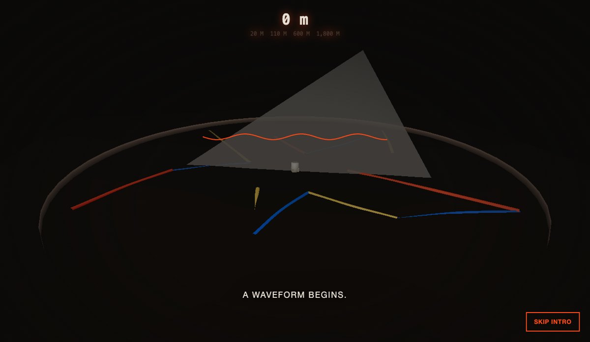
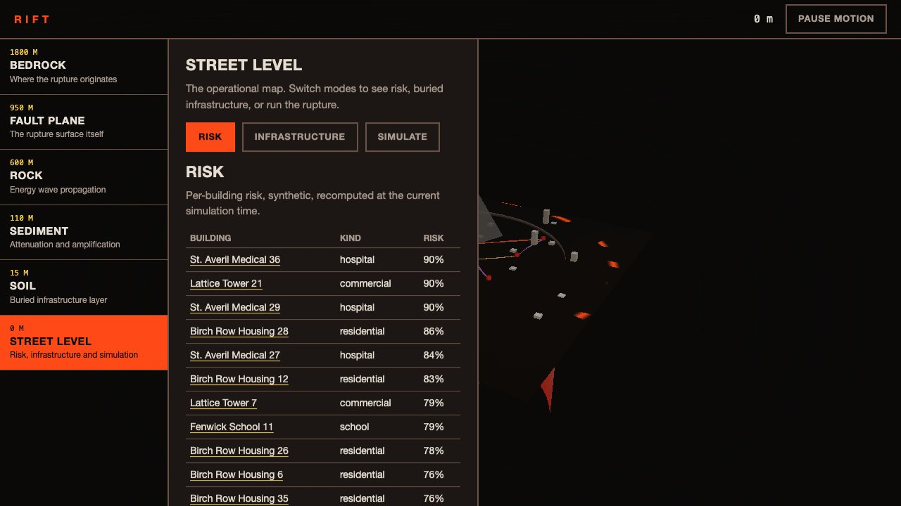
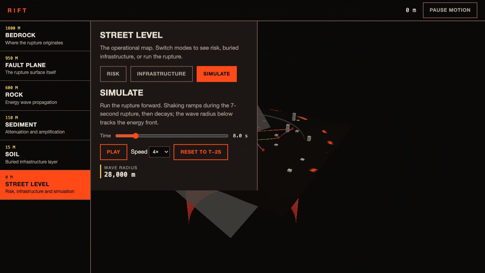
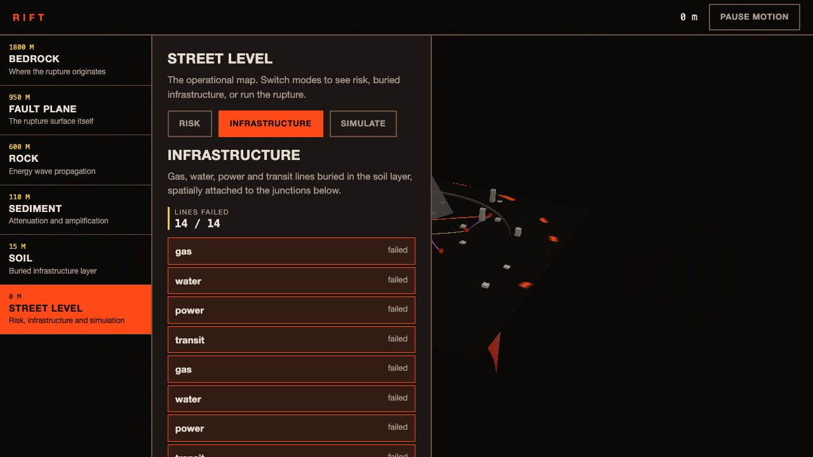

Blender · three.js · motion design · 2026-10
What Does a Six-Second Rupture Look Like From Bedrock to Street?
A seismic risk and subsurface infrastructure digital twin: a scripted Blender infrastructure shaft and building kit, a synthetic fault rupture with real attenuation and cascading utility failure, and a descent through soil, sediment, rock and bedrock that hands off, without a cut, into the operational street map.

Built from blueprint 01 of a written build book (Advanced Engineering Build Book, Volume VIII) as one vertical slice, using the five-tool-design-pipeline skill: an Awesome Design style file for type/spacing scale (palette came from the blueprint itself), the Taste/Impeccable anti-slop checklist applied by hand during build and polish, Playwright for the QA pass, and Three.js as the core product rather than a bolt-on. Everything is synthetic: the rupture, the 36 buildings and the 14 infrastructure nodes come from a seeded generator. Not built: PostGIS (the demo reads JSON), FastAPI (a Node API serves the same contract), WebGPU compute, auth, a measurement on a physical GPU. The 21 studio/specialist agent roles named by the book are committed as Claude Code configuration under .claude/agents, but this repository was produced by one session, not by parallel subagents.
01 — The problem
The book's rule for this blueprint is that the opening cinematic has to become the first usable product state: a camera that drops through geological layers has to end up somewhere a risk analyst could actually work, not cut to a dashboard. And the scroll interaction has to reveal something about seismology itself, not just move copy upward.
The test case is a seismic twin: pick a layer in a fault's stratigraphy, watch infrastructure embedded in it, then run a rupture forward and watch risk and cascading utility failure update live.
02 — What I built
One repository with the whole pipeline, not just the site.
- A scripted asset:
model/build.pybuilds an infrastructure shaft (collar, ladder, glow cap) and a five-variant building kit, exports GLBs and renders a poster still. - A validator:
model/validate.pyre-imports the GLBs into an empty scene and fails on a missing node, an orphan or a size budget breach. - A domain model: deterministic stratigraphy noise, a magnitude/distance/depth attenuation function, a rupture envelope (ramp during the rupture, exponential decay after), and per-building risk plus per-edge cascading infrastructure failure, all pure and unit-tested.
- A browser runtime that colors buildings by live risk, colors infrastructure shafts by whether an adjoining line has failed, and renders the fault plane's fracture and the epicenter's energy wave as GPU shaders driven by the same simulation clock the HUD reads.
- An intro on the wall clock with a skip control from the first frame, ending in a light mask centered on the same screen point the fault occupied through the whole descent.
- Fallbacks: a poster still for no WebGL or a lost context, static keyframes for reduced motion, and a table for every canvas fact.
03 — How it was built
- 01
One shader, six geological bands
The core column is a single cylinder with a fragment shader that mixes between Basalt, Volcanic, Iron and Deep Red by depth, matching the blueprint's palette band for band, plus a fracture term that brightens Magma near the fault plane as
live.fracturerises. One draw call renders what would otherwise be four stacked layer meshes. - 02
A rupture envelope, not a toggle
Shake intensity is a function of distance-attenuated peak intensity and a time envelope: a linear ramp during the 7-second rupture, then exponential decay, offset by a wave travel delay (3.5 km/s) so distant points shake later. The same function drives building risk color, infrastructure failure, and the energy wave ring radius, so the HUD numbers and the visuals never disagree.
export function shakeIntensityAt(ev, x, z, t) { const travelS = Math.hypot(x - ev.x, z - ev.z) / 3500; return Math.min(1, peakIntensityAt(ev, x, z) * shakeEnvelope(ev, t - travelS)); } - 03
Cascading failure without a graph library
Each infrastructure kind has a failure threshold (gas lowest, transit highest); an edge fails once the shake at its midpoint crosses it. The infrastructure shaft nearest any failed edge recolors from Iron to Magma. A unit test asserts transit edges never fail earlier than a gas edge at the same point, across a full time sweep.
- 04
The hand-off
The descent is a GSAP timeline on the wall clock (lag smoothing off). At 20.4 s a CSS
--maskvariable expands from the epicenter's screen position, the same point the fault plane sat at through the whole drop, revealing the street-level HUD through a radial light mask rather than a hard cut. - 05
Failing on purpose
The tests turn WebGL off, set reduced motion, shrink the window to 375 px, and clamp an out-of-range scrub value by setting the DOM property directly. In all cases the risk table, infrastructure list and simulate controls still work, because they were built as DOM first and the canvas second.
04 — Results
The descent, mid-fracture:
The operational map:



Checks. 17 unit and API tests, 17 Playwright tests (interaction, performance, and six-chapter visual regression), and a clean typecheck.
Performance, measured on an Apple M3 Pro with software WebGL (SwiftShader), not a GPU. 20 draw calls and 16,314 triangles in the street/simulate view; 568 KB of gzipped JavaScript; 25 KB and 15 KB of GLB. Software rendering took 3.8 s to the largest contentful paint and a median 16.7 ms per frame (already a 60 fps bound on a CPU rasteriser). I did not measure a real GPU.
05 — What I'd do next
- Run the performance script on a physical GPU and a mid-range phone.
- Replace the synthetic stratigraphy noise with a real geotechnical adapter and the JSON files with the PostGIS schema from the book.
- Add the four remaining building-kit variants to the instanced render for real silhouette variety instead of one scaled box.
- Model the infrastructure shaft's ladder and glow sub-meshes into the runtime instead of leaving them asset-only.